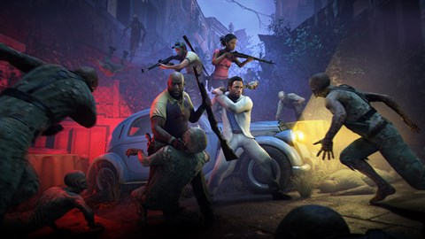
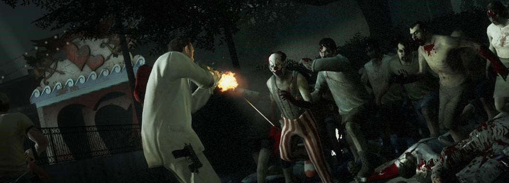
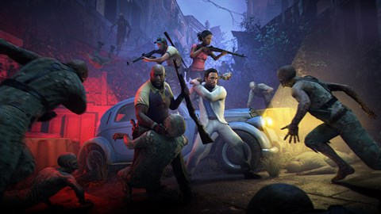
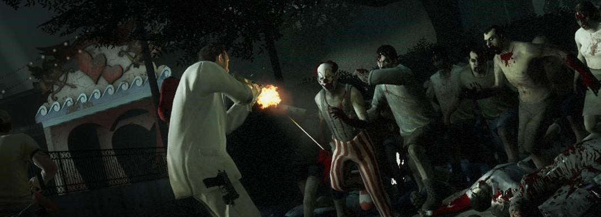

Left 4 Dead 2
- Género: Disparos, Survival horror
- Desarrollador: Valve Corporation
- Franquicia: Left 4 Dead
- Fecha de lanzamiento: 17 de noviembre de 2009
"Ambientado en el apocalipsis zombi, Left 4 Dead 2 (L4D2) es la esperadísima secuela del galardonado Left 4 Dead, el juego cooperativo número 1 de 2008. Este FPS cooperativo de acción y terror os llevará a ti y a tus amigos por las ciudades, pantanos y cementerios del Sur Profundo, desde Savannah hasta Nueva Orleans, a lo largo de cinco extensas campañas."